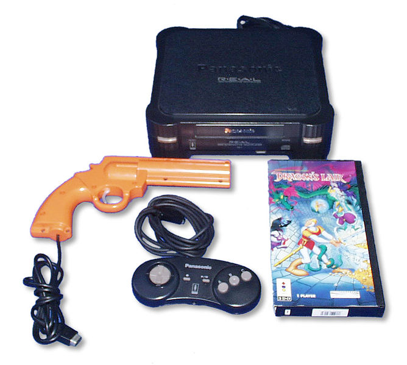

3DO Interactive, 1993
CPU:
ARM60 (RISC 32 bits)
Frequência: 12,5 MHz
Processador gráfico:
2 co-processadores de video
DSP
DSP de 16 bits
RAM: 2 MB
VRAM: 1 MB
CD de vel. dupla
Sem proteção de região
Unidades vendidas: 2 milhões